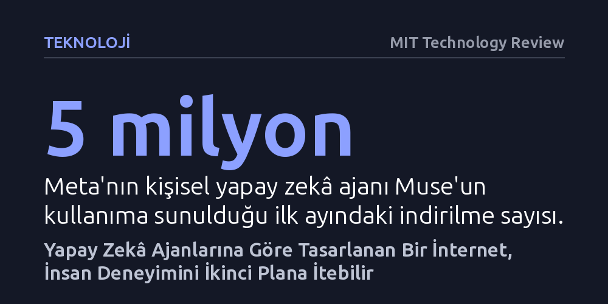

TEKNOLOJI · MIT Technology Review · 2026-10-20
Kişisel yapay zekâ ajanlarının yükselişi, web sitelerini insanlardan ziyade makinelere hizmet edecek biçimde dönüştürüyor. Bu değişim alışverişi hızlandırsa da insan kullanıcıları daha kötü arayüzler, değişken fiyatlar ve yorucu güvenlik doğrulamalarıyla baş başa bırakabilir.
İnternetin merkezinde daima insanların kalacağı varsayımını sarsarak, web altyapısının yakında çoğunluğu oluşturacak yapay zekâ yazılımları uğruna insan deneyimini feda edebileceğini gösteriyor.

Uzun yıllar boyunca internet kullanıcıları temelde iki gruba ayrılıyordu: İnsanlar ve arama motorları ya da veri toplayıcıların çalıştırdığı otomatik botlar. Web siteleri botlara belirli sınırlar dahilinde izin veriyor, altyapı ise bütünüyle insan algısına, hızına ve dikkatine göre tasarlanıyordu. Gerçek bir insan olduğumuzu kanıtlamak için ara sıra çözmek zorunda kaldığımız bulmacalar ve güvenlik testleri, bu iki dünya arasındaki sınır çizgisini korumaya yetiyordu.
OpenAI’ın Dots ve Meta’nın Muse gibi kişisel yapay zekâ asistanlarını geniş kitlelere sunması bu düzeni temelden sarstı. Kullanıcılar adına uçak bileti alan, tatil planlayan ya da fiyat pazarlığı yürüten bu yazılımlar, web için yepyeni bir "üçüncü ziyaretçi kategorisi" doğurdu. Ajanlar insan değiller ve interneti makinelerin işlem hızında tüketiyorlar; fakat klasik botlar gibi amaçsız veya kötü niyetli de değiller. Gerçek bireylerin somut ve meşru taleplerini temsil ediyorlar.
Mevcut güvenlik altyapıları bu yeni melez ziyaretçileri geleneksel botlardan ayırt etmekte yetersiz kalınca, birçok platform ilk tepki olarak kapılarını tamamen kapatmayı seçti. Pizza Hut'tan restoran rezervasyonlarında yapay zekâ kullanımını yasaklayan Yelp'e kadar pek çok site ajanların erişimini engelliyor. Amazon bir yandan Muse ajanlarını engellerken, diğer yandan Perplexity girişimine karşı mahkeme koridorlarında mücadele veriyor. Amazon'un en büyük kaygısı, reklam gelirlerinin temelini oluşturan "insan dikkati" ile makine trafiğinin birbirine karışması.
Ne var ki bu engellerin kalıcı olması pek olası görünmüyor. Wharton School’dan Ethan Mollick’in belirttiği gibi: "İnsanlar, ajanlarının kendi adlarına işlem yapmasına izin verilmediğinde eninde sonunda fazlasıyla öfkelenecek." Üstelik ajan trafiğinin ezici çoğunluğu e-ticaret sitelerine yöneliyor. Ortadaki devasa ticari potansiyeli gören Shopify gibi devler, ajanları engellemek yerine insanlara yönelik tasarlanmış sayfaları tümüyle baypas eden özel dijital ödeme koridorları açarak onları içeri kabul etmeye başladı bile.
İnternetin ajanlar için optimize edilmesi, webde gezinmeye devam eden insanlar açısından oldukça sancılı bir dönemin kapısını aralayabilir. Bugüne dek dikkatimizi çekmek ve bizi ekranda tutmak üzere kurgulanmış olsa da internetin öncelikli muhatabı daima insandı. Yakın gelecekte sayıca insanları geride bırakacak yapay zekâ ajanları için yeniden inşa edilecek bir webde ise insanların kullandığı arayüzler giderek ihmal edilebilir, yavaşlayabilir ve işlevsizleşebilir.
Dahası, doğrulama mekanizmaları insanlar için tam bir eziyete dönüşebilir. Her işlemde bot olmadığınızı ispatlamak için belki de göz bebeğinizi taratmak zorunda kalacaksınız. Aynı ürünün herkese aynı fiyattan satıldığı şeffaf pazar anlayışı da tarihe karışabilir; siteler her kullanıcının ajanına farklı dinamik fiyatlar sunabilir. Üstelik kişisel ajanınızın size önerdiği bir ürünün gerçekten en avantajlı seçenek mi olduğu, yoksa perde arkasındaki gizli reklam anlaşmalarından mı etkilendiği asla tam olarak bilinemeyecek.
OpenAI, Google ve Anthropic gibi yapay zekâ devleri, ajanların tüketiciye şirketler karşısında daha önce görülmemiş bir pazarlık gücü kazandıracağını vadediyor. Hatalı sağlık faturalarına itiraz eden ya da piyasadaki en ucuz araç sigortasını araştıran bir ajan, tüketicinin elinde gerçekten dönüştürücü bir kalkana dönüşebilir.
Fakat bu vaadin gerçeğe dönüşüp dönüşmeyeceği, şu sıralar sessizce yazılmakta olan yeni internet kurallarına bağlı. Kredi kartı bilgilerinin korunması gibi teknik güvenlik standartlarında herkes uzlaşsa da, şirketlerin ajanları engelleme yetkisinin sınırları ve bu yazılımların tüketici adına ne kadar agresif pazarlık yapabileceği henüz belirsiz. Bu tartışmalı kurallar, geleceğin internetinin insanlara hizmet eden bir mecra mı yoksa insanları dışlayan kapalı bir makine otoyolu mu olacağını tayin edecek.